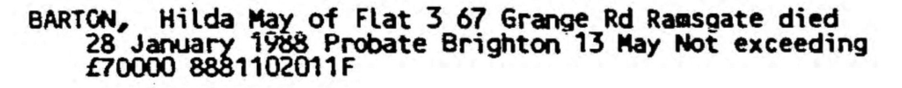
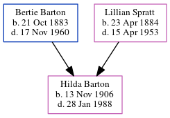

Hilda May Barton 1906 - 1988
[ Home ] | [ Calendar ] | [ Surnames Index ] | [ Errors ] | [ Family History ]A nurse and the eldest of 4 children of Bertie Barton (a builder & public work's contractor) and Lillian Spratt (a domestic general servant), Hilda Barton, the first cousin once-removed on the father's side of Nigel Horne, was born in Reculver, Kent, England on 13 Nov 19061,2,3,4,5,6,7,8 and baptised there at St Mary on 9 Dec 1906.
During her life, she was living at Phyllis Bungalow, Osborne Gardens in Reculver on 2 Apr 191110; at Hackney Hospital, Homerton High Street, Hackney, London, England on 29 Sept 19392; and on Flat 3, 67 Grange Road, Ramsgate, Kent, England in 1988.
She died on 28 Jan 1988 in Ramsgate5,6,9.
Parents
- Bertie John was born on 21 Oct 1883
- Lillian was born on 23 Apr 1884
Citations
- 1911 England Census Online publication - Provo, UT, USA: Ancestry.com Operations, Inc., 2011.Original data - Census Returns of England and Wales, 1911. Kew, Surrey, England: The National Archives of the UK (TNA), 1911. Data imaged from the National Archives, London, England.
- 1939 Register - Findmypast (was recorded at this address)
- British Army WWI Pension Records 1914-1920 Ancestry.com Operations Inc
- England & Wales births 1837-2006 - Findmypast
- England & Wales deaths 1837-2007 - Findmypast
- England & Wales, Death Index: 1984-2005 Online publication - Provo, UT, USA: The Generations Network, Inc., 2007.Original data - General Register Office. England and Wales Civil Registration Indexes. London, England: General Register Office. © Crown copyright. Published by permission of the Cont
- England & Wales, FreeBMD Birth Index, 1837-1915 Online publication - Provo, UT, USA: The Generations Network, Inc., 2006.Original data - General Register Office. England and Wales Civil Registration Indexes. London, England: General Register Office. © Crown copyright. Published by permission of the Cont
- Kent, Canterbury Archdeaconry Baptisms - Findmypast
- England & Wales Government Probate Death Index 1858-2019 - Findmypast
- 1911 Census for England & Wales - Findmypast (was age 4 and the daughter of the head of the household)
Media
Hilda Barton - probate

England & Wales births 1837-2006 - BMD/B/1906/4/AZ/000036/312
Kent, Canterbury Archdeaconry baptisms 1538-1912 - GBPRS/CANT/B/96379659
1911 Census for England & Wales - GBC/1911/RG14/04360/0035/3
1939 Register - TNA/R39/0210/0210C/007/17
England & Wales Government Probate Death Index 1858-2019 - GBOR/GOVPROBATE/C/1988-1988/00011715
Family Tree
Map
Generated by ged2site. Last updated on Jul 3, 2024
Known Issues
Residence record for 1988 contains no citation